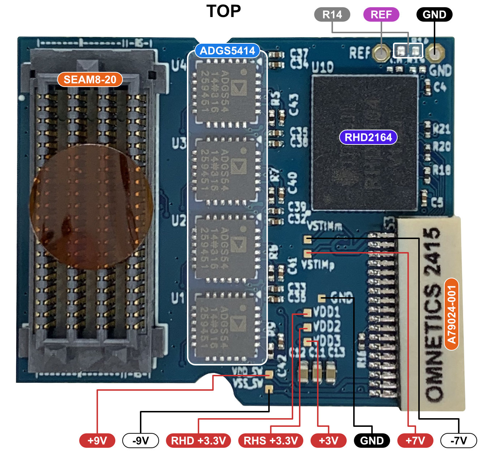
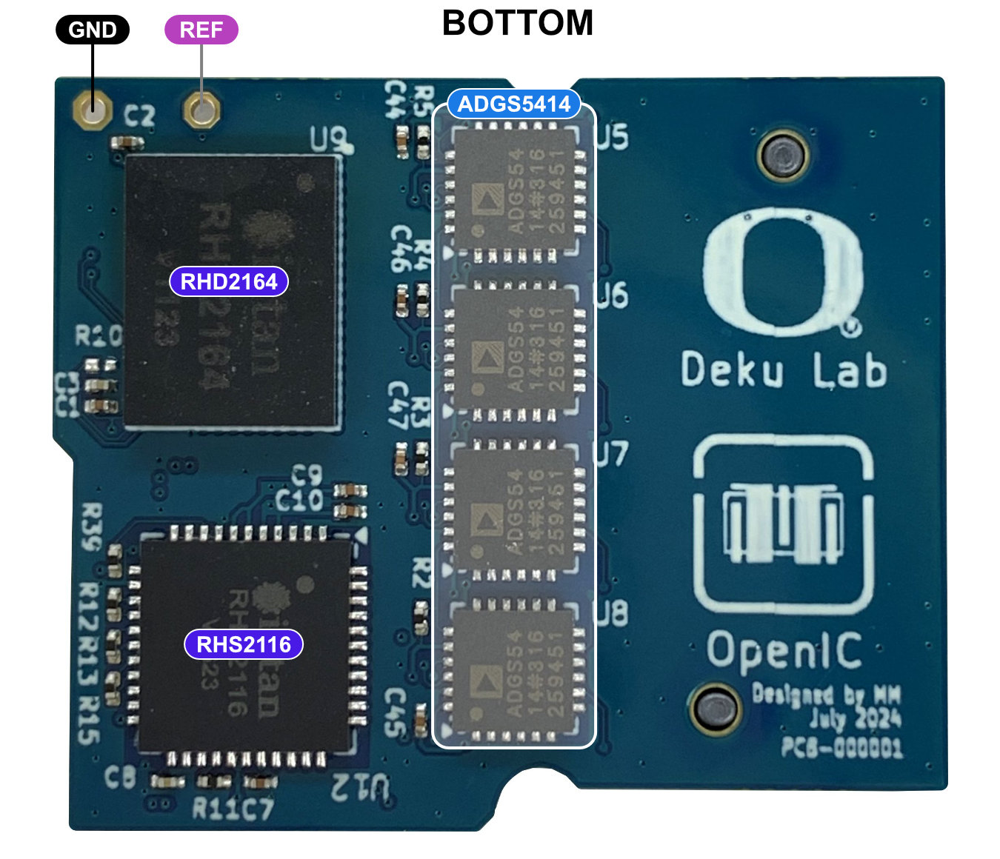
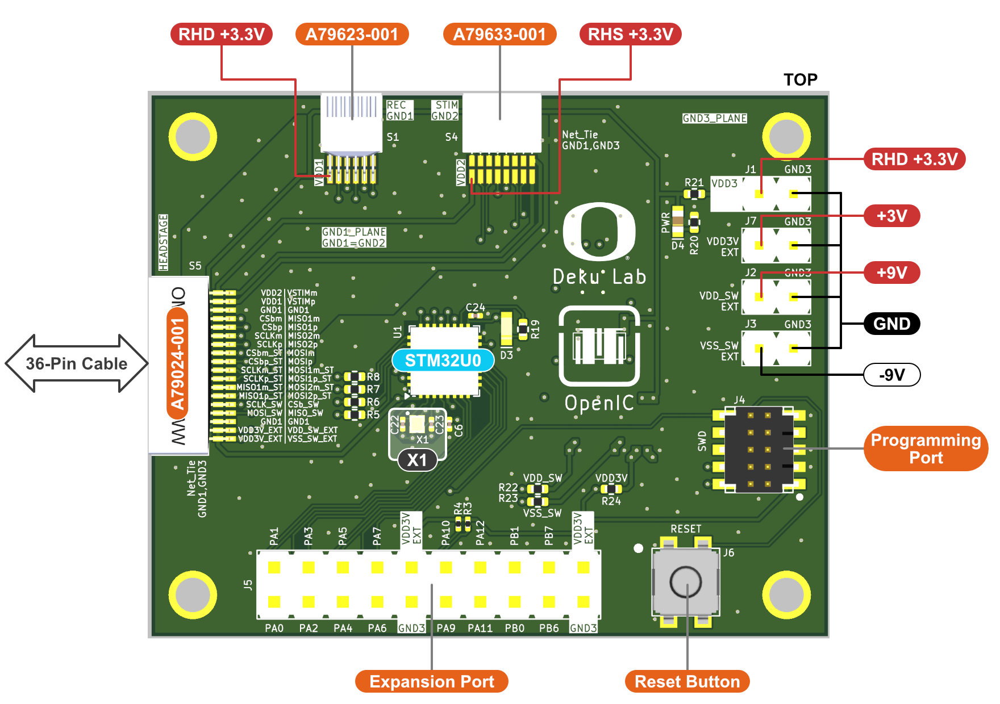
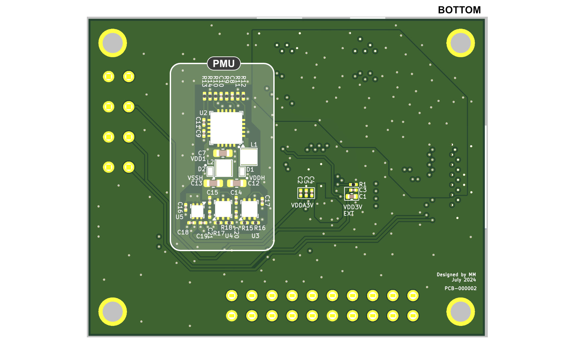
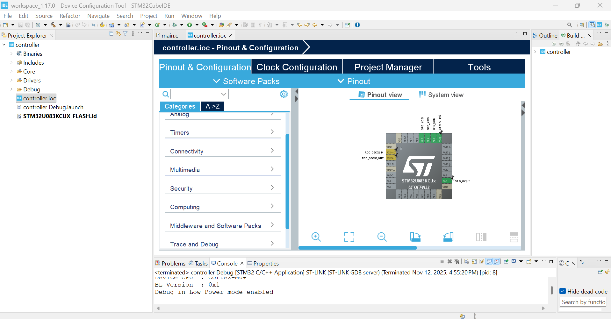
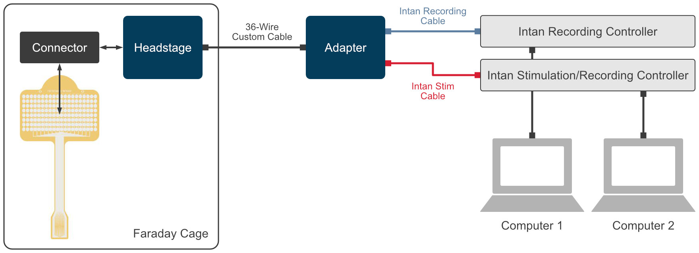
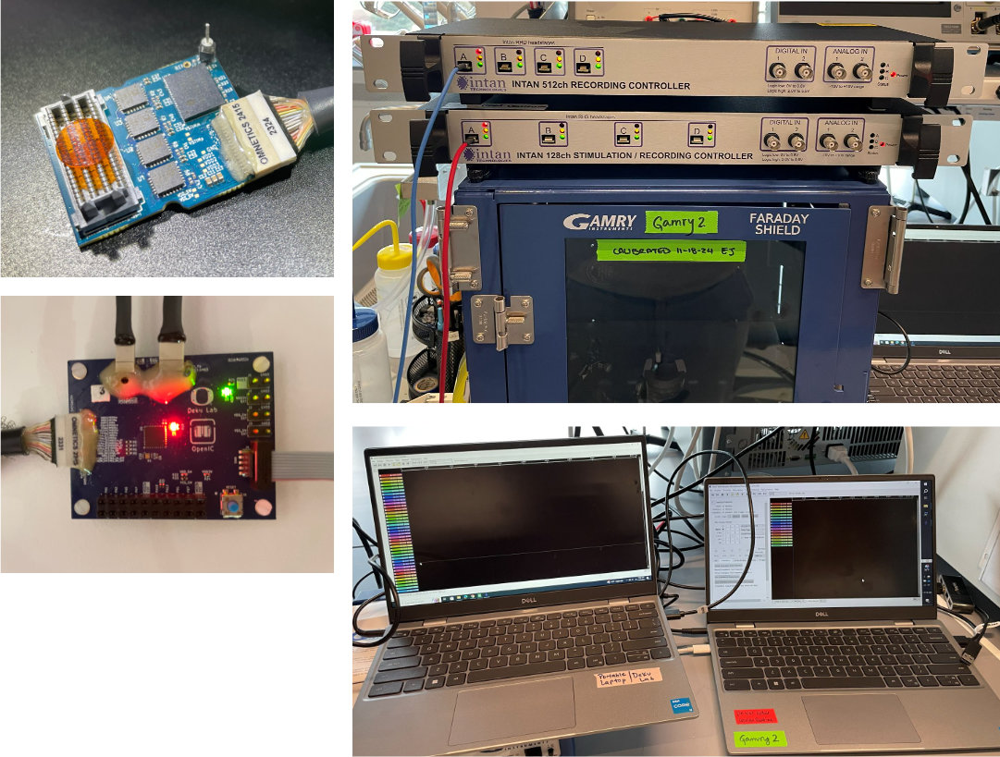
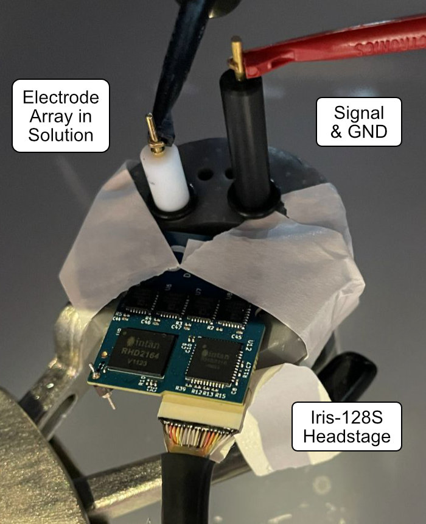

Iris-128S Quickstart Guide
Info
Open-Source 128-Channel Headstage for Neural Recording and Stimulation (Based on Jacobs et al., 2025 – “Iris 128x: Open-Source 128-Channel Headstages for Neural Stimulation and Recording”)
1. System Overview
The Iris-128S neural interface consists of a headstage and an adapter, and provides with 128-channel, selective bidirectional recording and stimulation capability using two RHD2164 and one RHS2116 Intan integrated amplifier and amplifier/stimulation chips. It interfaces with thin-film microelectrode arrays through a Samtec SEAF8 connector and communicates with an Intan RHD Controller and a RHS Controller via low-voltage differential signaling (LVDS) through Intan Omnetics cables. The headstage and adapter are connected with a 36-wire custom cable. A microcontroller (MCU) in the adapter can be programmed with a MCU-compatible programmer.
The architecture of Iris-128S neural interface is shown in the figure below.
graph LR
c0("128-Ch
Electrode
Array")
c1("`**Iris-128S
Headstage**`")
c2("`**Iris-128S
Adapter**`")
c3("Intan RHD
Controller")
c4("Intan RHS
Controller")
c5("Programmer")
c6("Computer")
c0 <--> c1
c1 <-- 36-Wire
Custom Cable --> c2
c2 <-- 12-Pin
Intan Cable --> c3
c2 <-- 16-Pin
Intan Cable --> c4
c2 <-- 10-Pin
Flat Cable --> c5
c3 <--> c6
c4 <--> c6
c5 <--> c6Figure 1. System Architecture of Iris-128S.
2. Hardware Components
List of required components:
- Iris-128S Headstage
- Iris-128S Adapter
- 36-Wire Custom Cable
- 160-pin Samtec SEAF8 connector
- Electrode Array
- Intan RHD Controller
- Intan RHS Controller
- 12-Pin Intan Cable
- 16-Pin Intan Cable
- 10-Pin Ribbon Cable
- STLINK-V3 Programmer
- Computer
2.1. Iris-128S Headstage
The figure below shows the different components of the headstage.


Figure 2. Photos of the Headstage top and bottom sides indicating its main components.
The table below shows the main components of the Iris-128S headstage. Note the component correspondance with the previous figure.
| Component | Description |
|---|---|
RHD2164 |
64-ch neural recording amplifier chip, Intan. |
RHS2116 |
16-ch neural recording/stimulation chip, Intan. |
ADGS5414 |
Octal high-voltage analog switch, Analog Devices. |
SEAM8-20 |
160-pin high-density connector, Samtec. |
A79024-001 |
36-pin high-density connector, Omnetics. |
R14 |
Unpopulated resistor which can be used to connect REF and GND. |
REF |
Reference pin. |
GND |
GND pin. |
VDD1 |
+3.3 V Supply for RHD2164 chips, testpoint. |
VDD2 |
+3.3 V Supply for RHS2116 chip, testpoint. |
VDD3 |
+3 V Supply to ADGS5414 chip, testpoint. |
VDD_SW |
+9 V Supply for ADGS5414 chip, testpoint. |
VSS_SW |
-9 V Supply for ADGS5414 chip, testpoint. |
VSTIMp |
+7 V Supply for RHS2116 chip, testpoint. |
VSTIMm |
-7 V Supply for RHS2116 chip, testpoint. |
2.2. Electrode Mapping
The figure below shows the mapping between the Electrode Array Connector, RHD2164 recording chips, and RHS2116 stim/record chip.

Figure 3. Electrode array connector mapping.
The figure below shows the daisy-chain SPI connection for the ADGS5414 analog switches.
graph LR
subgraph ADGS5414-U8
direction LR
SDI8 --> SDO8
end
subgraph ADGS5414-U7
direction LR
SDI7 --> SDO7
end
subgraph ADGS5414-U1
direction LR
SDI1 --> SDO1
end
MOSI_SW --> SDI8
SDO8 --> SDI7
SDO7 -..-> SDI1
SDO1 --> MISO_SWFigure 4. Analog switches daisy-chain SPI connection.
Analog Switches State
| Analog Switch | SWX_EN |
Description |
|---|---|---|
UX-Y |
0 1 |
Open Closed |
X,Y= {1,..,8}
Recording Electrodes
| Electrode Array Connector Pin |
RHD2164 Pin |
Electrode Array Connector Pin |
RHD2164 Pin |
|---|---|---|---|
R0 |
REC0IN1 | R48 |
REC0IN4 |
R1 |
REC0IN54 | R49 |
REC0IN6 |
R2 |
REC0IN62 | R50 |
REC0IN26 |
R3 |
REC0IN60 | R51 |
REC0IN31 |
R4 |
REC0IN58 | R52 |
REC0IN33 |
R5 |
REC0IN56 | R53 |
REC0IN22 |
R6 |
REC0IN3 | R54 |
REC0IN13 |
R7 |
REC0IN29 | R55 |
REC0IN15 |
R8 |
REC0IN46 | R56 |
REC0IN14 |
R9 |
REC0IN48 | R57 |
REC0IN18 |
R10 |
REC0IN52 | R58 |
REC0IN20 |
R11 |
REC0IN50 | R59 |
REC0IN24 |
R12 |
REC0IN5 | R60 |
REC1IN46 |
R13 |
REC0IN27 | R61 |
REC0IN12 |
R14 |
REC0IN59 | R62 |
REC0IN17 |
R15 |
REC0IN63 | R63 |
REC1IN17 |
R16 |
REC0IN45 | R64 |
REC1IN0 |
R17 |
REC0IN47 | R65 |
REC1IN16 |
R18 |
REC0IN7 | R66 |
REC1IN63 |
R19 |
REC0IN25 | R67 |
REC1IN8 |
R20 |
REC0IN51 | R68 |
REC0IN21 |
R21 |
REC0IN55 | R69 |
REC1IN2 |
R22 |
REC0IN43 | R70 |
REC1IN18 |
R23 |
REC0IN61 | R71 |
REC1IN4 |
R24 |
REC0IN9 | R72 |
REC1IN61 |
R25 |
REC0IN23 | R73 |
REC1IN26 |
R26 |
REC0IN40 | R74 |
REC0IN19 |
R27 |
REC0IN35 | R75 |
REC1IN20 |
R28 |
REC0IN57 | R76 |
REC1IN6 |
R29 |
REC0IN41 | R77 |
REC1IN22 |
R30 |
REC0IN11 | R78 |
REC1IN45 |
R31 |
REC0IN16 | R79 |
REC1IN43 |
R32 |
REC0IN30 | R80 |
REC1IN53 |
R33 |
REC0IN32 | R81 |
REC1IN37 |
R34 |
REC0IN53 | R82 |
REC1IN24 |
R35 |
REC0IN39 | R83 |
REC1IN10 |
R36 |
REC0IN0 | R84 |
REC1IN47 |
R37 |
REC0IN10 | R85 |
REC1IN55 |
R38 |
REC0IN36 | R86 |
REC1IN41 |
R39 |
REC0IN38 | R87 |
REC1IN42 |
R40 |
REC0IN49 | R88 |
REC1IN12 |
R41 |
REC0IN37 | R89 |
REC1IN28 |
R42 |
REC0IN2 | R90 |
REC1IN59 |
R43 |
REC0IN8 | R91 |
REC1IN57 |
R44 |
REC0IN28 | R92 |
REC1IN51 |
R45 |
REC0IN34 | R93 |
REC1IN49 |
R46 |
REC0IN42 | R94 |
REC1IN39 |
R47 |
REC0IN44 | R95 |
REC1IN44 |
Connections:
REC0INXU9;REC1INXU10
Stimulating/Recording Electrodes
Connected to RHS2116
| Electrode Array Connector Pin |
RHS2116 Pin |
Switch | FW Variable |
|---|---|---|---|
RS0 |
STIM9 | U8-2 | sw8[1] |
RS1 |
STIM9 | U8-1 | sw8[0] |
RS2 |
STIM8 | U8-3 | sw8[2] |
RS3 |
STIM8 | U8-4 | sw8[3] |
RS4 |
STIM11 | U8-5 | sw8[4] |
RS5 |
STIM11 | U8-6 | sw8[5] |
RS6 |
STIM4 | U8-8 | sw8[7] |
RS7 |
STIM4 | U8-7 | sw8[6] |
RS8 |
STIM3 | U7-2 | sw7[1] |
RS9 |
STIM3 | U7-1 | sw7[0] |
RS10 |
STIM0 | U7-3 | sw7[2] |
RS11 |
STIM0 | U7-4 | sw7[3] |
RS12 |
STIM14 | U7-7 | sw7[6] |
RS13 |
STIM12 | U7-5 | sw7[4] |
RS14 |
STIM12 | U7-6 | sw7[5] |
RS15 |
STIM14 | U7-8 | sw7[7] |
RS16 |
STIM15 | U2-1 | sw2[0] |
RS17 |
STIM15 | U2-2 | sw2[1] |
RS18 |
STIM13 | U2-4 | sw2[3] |
RS19 |
STIM13 | U2-3 | sw2[2] |
RS20 |
STIM1 | U2-6 | sw2[5] |
RS21 |
STIM1 | U2-5 | sw2[4] |
RS22 |
STIM5 | U2-7 | sw2[6] |
RS23 |
STIM5 | U2-8 | sw2[7] |
RS24 |
STIM6 | U1-1 | sw1[0] |
RS25 |
STIM6 | U1-2 | sw1[1] |
RS26 |
STIM2 | U1-4 | sw1[3] |
RS27 |
STIM2 | U1-3 | sw1[2] |
RS28 |
STIM7 | U1-6 | sw1[5] |
RS29 |
STIM7 | U1-5 | sw1[4] |
RS30 |
STIM10 | U1-7 | sw1[6] |
RS31 |
STIM10 | U1-8 | sw1[7] |
Connections:
STIMXU12
Connected to RHD2164
| Electrode Array Connector Pin |
RHD2164 Pin |
Switch | FW Variable |
|---|---|---|---|
RS0 |
REC1IN60 | U5-7 | sw5[6] |
RS1 |
REC1IN62 | U5-8 | sw5[7] |
RS2 |
REC1IN58 | U5-6 | sw5[5] |
RS3 |
REC1IN56 | U5-5 | sw5[4] |
RS4 |
REC1IN38 | U5-4 | sw5[3] |
RS5 |
REC1IN36 | U5-3 | sw5[2] |
RS6 |
REC1IN31 | U5-1 | sw5[0] |
RS7 |
REC1IN34 | U5-2 | sw5[1] |
RS8 |
REC1IN27 | U6-7 | sw6[6] |
RS9 |
REC1IN29 | U6-8 | sw6[7] |
RS10 |
REC1IN25 | U6-6 | sw6[5] |
RS11 |
REC1IN23 | U6-5 | sw6[4] |
RS12 |
REC1IN3 | U6-2 | sw6[1] |
RS13 |
REC1IN7 | U6-4 | sw6[3] |
RS14 |
REC1IN5 | U6-3 | sw6[2] |
RS15 |
REC1IN1 | U6-1 | sw6[0] |
RS16 |
REC1IN9 | U3-8 | sw3[7] |
RS17 |
REC1IN11 | U3-7 | sw3[6] |
RS18 |
REC1IN15 | U3-5 | sw3[4] |
RS19 |
REC1IN13 | U3-6 | sw3[5] |
RS20 |
REC1IN30 | U3-3 | sw3[2] |
RS21 |
REC1IN14 | U3-4 | sw3[3] |
RS22 |
REC1IN19 | U3-2 | sw3[1] |
RS23 |
REC1IN21 | U3-1 | sw3[0] |
RS24 |
REC1IN32 | U4-8 | sw4[7] |
RS25 |
REC1IN33 | U4-7 | sw4[6] |
RS26 |
REC1IN40 | U4-5 | sw4[4] |
RS27 |
REC1IN35 | U4-6 | sw4[5] |
RS28 |
REC1IN50 | U4-3 | sw4[2] |
RS29 |
REC1IN48 | U4-4 | sw4[3] |
RS30 |
REC1IN52 | U4-2 | sw4[1] |
RS31 |
REC1IN54 | U4-1 | sw4[0] |
Connections:
REC1INXU10
2.3. 36-Wire Custom Cable
The 36-wire custom cable is made out of two 36-pos dual row cable assembly (A79029-001) connected in a 1-to-1 fashion. Each wire connection is soldered and protected with a heat-shrinking tube. Additional heat-shrinking tubes are placed near the connectors. A metal shielding mesh is wrapped around the cable.

Figure 5. 36-Wire Custom Cable.
2.4. Adapter
The figure below shows the different components of the adapter.


Figure 6. Rendering of the Adapter top and bottom sides indicating its main components.
The table below shows the main components of the Iris-128S adapter. Note the component correspondance with the previous figure.
| Component | Description |
|---|---|
RHD +3.3V |
64-ch neural recording amplifier chip, Intan. |
RHS +3.3V |
16-ch neural recording/stimulation chip, Intan. |
J1-1 |
RHD +3.3V pin header. |
J7-1 |
VDD3V pin header. This +3 V supply is generated by the PMU. |
J2-1 |
VDD_SW pin header. This +9 V supply is generated by the PMU. |
J3-1 |
VSS_SW pin header. This -9 V supply is generated by the PMU. |
J1-2, J7-2 J2-2, J3-2 |
GND pin headers. |
A79623-001 |
12-pin high-density connector, Omnetics. |
A79633-001 |
16-pin high-density connector, Omnetics. |
A79024-001 |
36-pin high-density connector, Omnetics. |
J4 |
SWD 10-pin 0.05' pitch Programming Port. |
J6 |
Reset Button connected to the MCU. |
J5 |
Expansion Port with MCU GPIOs. |
STM32U0 |
STM32U083KCU6 Ultra-low-power Arm M0+, 32-bit MCU. |
PMU |
Power management unit which generaters +3 V and ±9 V. |
X1 |
ECX-1210B 32.768 kHz Crystal. |
3. Programming the Adapter MCU
The adapter board has a STM32U083 ultra-low-power Arm M0+ 32-bit microcontroller (MCU) which is used to program the state of the switches in the headstage through SPI communication. You can use any tool you want to build the firmware and program the MCU; here we use the STM32Cube tools. You can download all the project documents from our GitHub repository.
Building & Programming the Project
1. Install software & hardware:
STM32CubeIDESTM32CubeProgrammerSTLINK-V3box with cable (for programming the STM32)
2. Download and import the project files:
- From
GitHub, locate the controller folder. - In
STM32CubeIDE, go to File → Import → Existing Projects into Workspace. - Select the controller folder and finish the import.
3. Connect the hardware:
- Connect the
adapterboard to theSTLINK-V3through the programming port. - Connect the Intan
RHD ControllerandRHS controllerusing the Intan Record and Stim cables. - Power on the
RHD Controller(first) andRHS controller.
4. Open the project in STM32CubeIDE:
- Open the
controller.iocfile.

Figure 7. Screenshoot of the STM32CubeIDE showing the controller.ioc.
5. Open and edit code:
- In the Project Explorer, open
main.c. - Edit the switch states as described below (these control which electrodes connect to which chip).
- Example: To switch electrode RS0 from RHD to RHS, set the corresponding value in the switch matrix to 1 - in the screenshots. Section 2.2 lists the switch positions.

Figure 8. Screenshoot of the STM32CubeIDE showing the main.ioc.
Figure 9. Changing the RS0 switch state from RHD to RHS.
6. Build and compile:
- Click the
 icon (“Build Project”) to compile.
icon (“Build Project”) to compile. - Wait for “Build Finished” to appear in the console.
7. Locate the compiled output:
- The compiled firmware file is saved in the project’s
Debugfolder:C:\Users\...\STM32CubeIDE\workspace_1.17.0\controller\Debug\controller.elf - This
.elffile can be used directly withSTM32CubeProgrammer.
8. Flash the controller using STM32CubeProgrammer:
- Open
STM32CubeProgrammer. - Connect to the board via
STLINK-V3. - Click
Open fileand selectcontroller.elf(orcontroller.binif generated). - Click
Start Programming.

Figure 10. Screenshoot of the STM32CubeProgrammer showing the main.ioc.
9. Verify the update:
- Restart the Intan RHD and RHS software.
- Check that the switches have updated correctly (e.g., this can be checked by running the impedance function in Intan RHS controller for that electrode. It should switch from the RHD controller to the RHS controller. Unconnected channels will have MOhm impedances.).
Quick Summary
| Step | Action | Tool |
|---|---|---|
| 1 | Install CubeIDE and CubeProgrammer |
|
| 2 | Import project | CubeIDE |
| 3 | Connect hardware | |
| 4 | Open project and connect | CubeIDE |
| 5 | Edit main.c |
CubeIDE |
| 6 | Build project | CubeIDE |
| 7 | Locate controller.elf in Debug folder |
|
| 8 | (Optional) Generate controller.bin |
CubeIDE |
| 9 | Flash firmware | CubeProgrammer |
| 10 | Verify in Intan software |
Changing the State of the Switches
You can change the state of each of the switches in the eight octal ADGS5414 by updating the values of the constants shown below. Notice that the bit swX[Y] corresponds to the Y switch of component uX, where X,Y \(\in \{1,2,...8 \}\) . The value of 0 indicates the switch is open whereas the 1 indicates it is closed.
| Function | Actions |
|---|---|
| Recording | OPEN the switch to the RHS2116 and CLOSE the one to the RHD2164. |
| Stimulation | CLOSE the switch to the RHS2116 and OPEN the one to the RHD2164. |
Example Code
/* Switches states: swX=[7..0] */
// Default values
aTxBuffer[0] = 0b00000000; // sw1
aTxBuffer[1] = 0b00000000; // sw2
aTxBuffer[2] = 0b11111111; // sw3
aTxBuffer[3] = 0b11111111; // sw4
aTxBuffer[4] = 0b11111111; // sw5
aTxBuffer[5] = 0b11111111; // sw6
aTxBuffer[6] = 0b00000000; // sw7
aTxBuffer[7] = 0b00000000; // sw8
Warning
When configuring a stimulation channel, make sure to OPEN the switch connected to the RHD2164. Failure to do so can cause damage to the RHD2164 due to the possibility of higher than expected voltages at its input.
Further Development
The current use of the MCU is to program the state of the switches in the headstage after the adapter board is powered on. You could further expand the functions of the MCU to adapt the Iris-128s neural interface to your project. For this purpose, the adapter board features a reset button, a 32 kHz crystal, and a expansion port with flexible GPIO for easy prototyping and development.
4. Hardware Setup
The figures below show the required hardware setup.

Figure 11. Hardware setup diagram.

Figure 12. Hardware setup picture.

Figure 13. Iris-128S performing measurements in PBS inside a Faraday cage.
Step 1 — Prepare for Surgery
- Secure the animal in a stereotaxic frame.
- Mount the 3D-printed headstage holder onto the stereotax.
- Seat the thin-film electrode connector into the holder.
- Plug the Iris-128S headstage into the thin-film connector.
- Fasten the headstage to the holder via mounting holes.
Step 2 — Connect to Adapter
- Connect the 36-pin custom cable between
headstageandadapter. - Route this cable outside the Faraday cage.
- Plug in the 1 RHD interface cable (blue Omnetics) and 1 RHS interface cable (red Omnetics):
- S1 RHD Controller
- S4 RHS Controller
Step 3 — Ground and Reference
- Connect
REFandGNDpads using platinum wires soldered into the through-holes on the headstage. - Keep
REFandGNDunshorted during normal operation. - Optionally, these may be tied together or implemented on the thin-film array.
- Ensure the entire setup (animal, cage, supplies) shares a common ground.
5. Software Setup
- Install Intan RHD Recording Controller Software into Computer 1 (see Intan User Guide).
- Install Intan RHS Recording Controller Software into Computer 2 (see Intan User Guide).
- Connect the RHD Controller to Computer 1 via USB.
- Connect the RHS Controller to Computer 2 via USB.
- Power on the Intan RHD Controller.
- Power on the Intan RHS Controller.
- Launch the software in both computers — channels should automatically appear.
- Adjust sampling rate and channel naming as needed.

Figure 14. Two computers running the (left) Intan Recording Controller software and (right) Stimulation/Recording Controller software.
6. Power-Up Sequence
- Confirm all mechanical and electrical connections.
- Turn on RHD Intan Controller.
- Turn on RHS Intan Controller.
- Verify communication in the Intan software.
7. Bench & Animal Setup Checklist
| Stage | Procedure |
|---|---|
| Bench Validation | Connect planar 128-ch polyimide MEA verify impedance in PBS (~295 kΩ @ 1 kHz). |
| Grounding | Attach platinum wires for REF and GND to headstage pads. |
| Recording | Launch Intan software set sampling rate 30 kSa/s confirm signal. |
| In Vivo Setup | Craniotomy insert MEA into cortex connect headstage. |
| Validation | Observe LFPs (0.5–100 Hz) and single-unit spikes (~250–500 μVpp). |
8. Performance Summary
| Metric | Iris 128S | Comparison (Intan 32 ch) |
|---|---|---|
| Noise (Vrms) | 3.33 μV | 2.4 μV |
| Weight | 4.47 g | 1.4 g |
| Volume | 720 mm3 | 576 mm3 |
| Channels | 32 stim / 128 record | 32 stim / 32 record |
| Frequency Response | 0.5 Hz – 5 kHz (flat midband gain) | Similar |
| Impedance (1 kHz, Pt site) | ~2.9 × 105 Ω | 2.4 × 105 Ω |
| Supply | ±7 V & 3.3 V | 3.3 V (single) |
9. Stimulation Parameters
- Chip: Intan RHS2116 (D5716)
- Current Range: 2.55 µA – 255 µA
- Step Size: 10 nA – 10 µA
- Supply Range: ±3.3 – 10.7 V (max combined 14 V)
- Sampling Rates: 1 – 30 kS/s
- Test Waveform: Biphasic cathodic-first 4 µA, 500 µs pulses, 100 Hz (0.1 mC/cm² charge density)
10. Additional Notes
- The 36-wire custom cable was built on-premise; contact manuel@openic.org for any questions.
- The design files, schematics, BOMs, and firware are open-source on GitHub (OpenIC / U Oregon).
- The Iris 128B and 128S share identical PCB stack-up and fabrication parameters:
- 8-layer (3 mil trace / space, ENIG finish, 1 oz Cu).
- Designed in KiCad,
STM32CubeIDE, verified by micro-CT imaging and in vivo rat recordings. - For portable or wireless operation, future iterations aim to reduce weight < 3 g.
11. Reference Setup Recipe
- Connect all GNDs in the system.
- Connect electrode array headstage adapter Intan Controllers.
- Verify REF/GND connections (platinum wire, bone screw, headstage ground, system ground).
- Power on Intan RHS Controller and RHD Controller and confrim communication with headstage.
- Update MCU firmware if needed.
- Begin recording and stimulation tests.